에너지관리산업기사 (2012-03-04 기출문제)
1과목: 열역학 및 연소관리
1. 다음 연소반응식 중 발열량(kcal/kg-mol)이 가장 큰 것은?
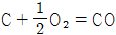
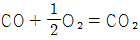
- C + O2 = CO2
- S + O2 = SO2
(정답률: 85%)

2. 일반적으로 고체연료는 액체연료에 비하여 어떠한가?
- H의 함량이 많고, O의 함량이 적다.
- N의 함량이 많고, O의 함량이 적다.
- O의 함량이 많고, N의 함량이 적다.
- O의 함량이 많고, H의 함량이 적다.
(정답률: 70%)
3. 다음 중 BLEVE(Boiling Liquid Expanding Vapour Explosion)현상을 가장 올바르게 설명한 것은?
- 물이 점성의 뜨거운 기름 표면 아래서 끓을 때 연소를 동반하지 않고 over flow되는 현상
- 물이 연소유(oil)의 뜨거운 표면에 들어갈 때 발생되는 over flow되는 현상
- 탱크 바닥에 물과 기름의 에멀젼이 섞여 있을 때 물의 비등으로 인하여 급격하게 over flow 되는 현상
- 과열 상태의 탱크에서 내부의 액화 가스가 분출하여 기화되어 착화되었을 때 폭발하는 현상
(정답률: 77%)
4. 다음 중 유량조절 범위가 가장 큰 오일 버너는?
- 환류식 압력분무식
- 비환류식 압력분무식
- 고압기류식
- 저압기류식
(정답률: 86%)
5. 수소의 연소하한계는 4v%이고, 연소상한계는 75v%이다. 수소 가스의 위험도는 얼마인가?
- 15.75
- 16.75
- 17.75
- 18.75
(정답률: 63%)
6. 연도의 끝이나 연돌하부에 송풍기를 설치하여 연소가스를 빨아내는 방법으로 로 안이 항상 부(-)압이 되는 통풍 방법은?
- 자연통풍
- 압입통풍
- 평형통풍
- 유인통풍
(정답률: 62%)
7. CH4 45%, H2 30%, CO2 10% O2 8%, N2 7%로 구성된 혼합기 체연료 1Nm3 이 있을 때 이 혼합가스를 6Nm3의 공기로 연소 시킨다면 공기비는 약 얼마인가?
- 1.2
- 1.3
- 1.4
- 3.0
(정답률: 54%)
8. 액체연료를 분석한 결과 그 성분이 다음과 같았다. 이 연료의 연소에 필요한 이론공기량(Nm3/kg)은?
- 10.9
- 12.3
- 13.3
- 14.3
(정답률: 58%)
9. 연돌입구의 온도가 200℃, 출구 온도가 30℃일 때 배출가스의 평균온도는 약 몇 ℃ 인가?
- 85℃
- 90℃
- 100℃
- 115℃
(정답률: 62%)
10. 다음 연료 중 발열량이 가장 큰 것은?
- 아세틸렌
- 프로판
- 메탄
- 코크스로가스
(정답률: 73%)
11. 수소 1kg을 완전연소시키는데 필요한 이론산소량은 몇 Nm3 인가?
- 1.86
- 2
- 5.6
- 26.7
(정답률: 58%)
12. 중유의 분무연소에 있어서 가장 적당한 기름방울의 평균입경(μm)은?
- 1000~2000
- 500~1000
- 50~100
- 10~50
(정답률: 76%)
13. 연료의 불완전연소에서 발생되는 그을음(soot, 검댕)에 대한 설명으로 옳은 것은?
- 연료 중 탄소와 수소의 비(C/H)가 작을수록 그을 음이 발생하기 쉽다.
- 기체연료의 확산연소는 예혼합연소에 비해 그을음이 발생하기 어렵다.
- 탈수소 반응이나 방향족 생성반응 등이 일어나기 쉬운 탄화수소일수록 그을음 발생이 어렵다.
- 분해나 산화하기 쉬운 탄화수소는 그을음을 적게 발생 시킨다.
(정답률: 54%)
14. 공기와 혼합시 폭발범위가 가장 넓은 것은?
- 메탄
- 프로판
- 일산화탄소
- 메틸알코올
(정답률: 70%)
15. 고체연료를 사용하는 어느 열기관의 출력이 2800kW이고 연료소비율이 매시간 1300kg 일 때 이 열기관의 열효율은 약 몇 % 인가? (단, 이 고체연료의 저위발열양은 28MJ 이다.)
- 28
- 32
- 36
- 40
(정답률: 35%)
16. 연료를 연소시키는 경우의 공기비에 대한 설명 중 옳지 않은 것은?
- 공기비가 클 경우 연소실 내의 온도가 올라간다.
- 공기비가 적을 경우 역화의 위험성이 있다.
- 공기비는 배기가스 중의 산소 % 가 최저가 되도록 하는 것이 좋다.
- 공기비는 이론공기량에 대한 실제공기량의 비를 의미한다.
(정답률: 55%)
17. 고체연료가 갖는 장점에 대한 설명으로 옳은 것은?
- 설비비 및 유지비가 저렴하다.
- 공연비 조절이 용이해 부하변동에 쉽게 대처할 수 있다.
- 발열량이 크고 완전연소가 가능하다.
- 연소용 공기를 예열하므로 연소효율이 높다.
(정답률: 71%)
18. B-C유 100리터에서 발생하는 이산화탄소배출량은 약 몇 CO2 인가? (단, B-C유의 석유환산계수는 0.935T0E/kL 이며, 중유의 탄소 배출계수는 0.875TC/TOE 이다.)
- 0.08181
- 0.0989
- 0.3
- 0.5
(정답률: 44%)
19. 연료유에는 여러 목저 때문에 각종 첨가제를 가한다. 다음 중 연료류 첨가제의 종류와 약제가 옳지 않게 짝지어진 것은?
- 산화방지제 - 페놀류, 방향족아민화합물
- 세탄기향상제 - 요오드화합물
- 빙결방지제 - 계면활성제
- 회분개질제 - 마그네슘화합물
(정답률: 67%)
20. 어떤 보일러의 효율을 산출하기 위한 측정 결과가 다음과 같았다. 이 경우의 효율은 약 몇 % 인가?
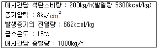
- 50
- 61
- 72
- 83
(정답률: 54%)
2과목: 계측 및 에너지진단
21. 다음 중 건도가 0 일 때의 상태로 적합한 것은?
- 습증기
- 건포화증기
- 과열증기
- 포화액체
(정답률: 61%)
22. 열기관의 실제 사이클이 이상 사이클보다 낮은 열효율을 가지는 이유에 대한 설명 중 틀린 것은?
- 과정이 가역적으로 이루어진다.
- 유체의 마찰손실이 있다.
- 유한한 온도차이에서 열전달이 이루어진다.
- 엔트로피가 생성된다.
(정답률: 62%)
23. 증기터빈에 36kg/s의 증기를 공급하고 있다. 터빈의 출력이 3×104kW 이면 터빈의 증기 소비율은 몇 kg/kWㆍh 인가?
- 3.00
- 4.32
- 6.25
- 7.18
(정답률: 65%)
24. “일을 열로 바꾸는 것도 이것의 역도 가능하다.”는 것과 가장 관계가 깊은 법칙은?
- 열역학 제1법칙
- 열역학 제2법칙
- 줄(Joule)의 법칙
- 푸리에(Fourier)의 법칙
(정답률: 76%)
25. 보일의 법칙을 나타내는 식으로 옳은 것은? (단, C는 일정한 상수를 나타낸다.)
- T/V = C
- V/T = C
- PV = C
- PV/T = C
(정답률: 82%)
26. 디젤기관의 열효율은 압축비 ε, 차단비(또는 단절비) σ 와 어떤 관계가 있는가?
- ε와 σ 가 증가할수록 열효율이 커진다.
- ε와 σ 가 감소할수록 열효율이 커진다.
- ε가 감소하고, σ 가 증가할수록 열효율이 커진다.
- ε가 증가하고, σ 가 감소할수록 열효율이 커진다.
(정답률: 78%)
27. 부피가 일정한 공간 내에서 공기 10kg 을 온도 20℃에서 100℃ 까지 가열하는 경우 내부에너지 변화량은 몇 kJ 인가? (단, 공기의 정적비열은 0.71kJ/kgㆍK 이고 정압비열은 1.0kJ/kgㆍK 이다.)(오류 신고가 접수된 문제입니다. 반드시 정답과 해설을 확인하시기 바랍니다.)
- 514
- 568
- 800
- 932
(정답률: 56%)
28. 진공압력 740mmHg는 절대압력으로 약 몇 kPa인가?
- 1.89
- 2.67
- 74.0
- 98.7
(정답률: 56%)
29. 탱크 내에 900kPa의 공기 20kg 이 충전되어 있다. 공기 1kg 을 뺄 때 탱크 내 공기온도가 일정하다면 탱크 내 공기압력은 몇 kPa 이 되는가?
- 655
- 755
- 855
- 900
(정답률: 69%)
30. 430K에서 500kJ 의 열을 공급받아 300K에서 방열시키는 카르노사이클의 열효율과 일량을 옳게 나타낸 것은?
- 30.2%, 349kJ
- 30.2%, 151kJ
- 69.8%. 151kJ
- 69.8%, 349kJ
(정답률: 74%)
31. 다음 중 이상기체의 등온과정에 대하여 항상 성립 하는 것은? (단, W 는 일, Q는 열, U 는 내부에너지를 나타낸다.)
- W = 0
- Q = 0
- │Q│ ≠ │W│
- △U = 0
(정답률: 81%)
32. 압력 700kPa. 온도 250℃ 인 공기가 축소-확대 노즐에서 가역단열팽창할 때 노즐 목(throat)에서의 공기 속도는 약 몇 m/s 인가? (단, 노즐 출구에서는 초음속이며 공기의 비열비는 1.4이고, 기체상수는 0.287kJ/kgㆍK 이다.)
- 463
- 452
- 430
- 418
(정답률: 25%)
33. 증기 사이클의 효율을 올리기 위한 방법이 아닌것은?
- 유입되는 증기의 온도를 높인다.
- 배출되는 증기의 온도를 높인다.
- 배출증기의 압력을 낮춘다.
- 유입증기의 압력을 높인다.
(정답률: 75%)
34. 클라우시우스(Clausius)의 부등식을 옳게 나타낸 것은?
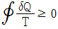
- ∲δQ ≥ 0
- ∲δQ ≤ 0
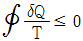
(정답률: 72%)
35. 어떤 이상기체를 가역단열과정으로 압축하여 압력이 P1 에서 P2 로 변하였다. 압축 후의 온도를 구하는 식은? (단, 1 은 초기상태, 2 는 최종상태, k 는 비열비를 나타낸다.)
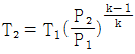
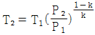
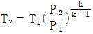
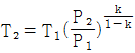
(정답률: 67%)
36. 압력을 일정하게 유지하면서 200kg 의 이상기체를 300K에서 600K 까지 가열한다면 엔트로피 변화량은 약 몇 kJ/K 인가? (단, 이 기체의 정압비열은 1.0035kJ/kgㆍK 이다.)
- 117.2
- 139.1
- 227.3
- 240.1
(정답률: 54%)
37. 가솔린 기관의 이론 표준 사이클인 오토사이클(ottocycle)의 4가지 기본 과정에 포함되지 않는 것은?
- 정압가열 과정
- 단열팽창 과정
- 단열압축 과정
- 정적방열 과정
(정답률: 67%)
38. 압력 500kPa, 온도 320℃ 의 공기 3kg 을 일정 압력으로 채적을 1/2까지 압축시키면 방출된 열량은 약 몇 kJ 인가? (단, 공기의 기체상수는 0.287kJ/kgㆍK 이다.)(오류 신고가 접수된 문제입니다. 반드시 정답과 해설을 확인하시기 바랍니다.)
- 217
- 445
- 634
- 890
(정답률: 24%)
39. 과열증기에 대한 설명으로 옳은 것은?
- 대기압력보다 압력이 높은 증기
- 동일한 압력에서 건포화증기의 온도보다 높은 온도를 갖는 증기
- 건포화증기와 습포화증기를 혼합한 증기
- 동일한 온도에서 건포화증기에 압력을 가한 증기
(정답률: 71%)
40. 랭킨사이클의 효율을 높이기 위한 방법으로 옳은 것은?
- 보일러의 가열 온도를 높인다.
- 응축기의 응축 온도를 높인다.
- 펌프 소요 일을 증대시킨다.
- 터빈의 출력을 줄인다.
(정답률: 69%)
3과목: 열설비구조 및 시공
41. 큐폴라 상부의 배기가스 온도를 측정하고자 한다. 어떤 온도계가 가장 적당한가?
- 광고온계
- 열전대온도계
- 색온도계
- 수은온도계
(정답률: 67%)
42. 링밸런스식 압력계에 대한 설명 중 옳은 것은?
- 압력원에 가깝도록 계기를 설치한다.
- 부식성 가스나 습기가 많은 곳에는 다른 압력계보다 정도가 높다.
- 도압관은 될 수 있는 한 가늘고 긴 것이 좋다.
- 측정 대상 유체는 주로 액체이다.
(정답률: 73%)
43. 열기전력에 의한 제백(seebeck)효과를 이용한 온도계는?
- 서미스터
- 열전대온도계
- 백금저항온도계
- 니켈저항온도계
(정답률: 69%)
44. 그림에서와 같이 탱크에 물이 들어있다. 탱크 하부에서의 압력은 얼마인가? (단, 물의 비중은 1.0 이다.)
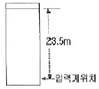
- 2.35kg/cm2
- 23.5kg/cm2
- 23.5cmH2O
- 23.5Pa
(정답률: 60%)
45. 온도측정에 대한 하나의 방법으로 색(色)을 이용하는 비교측정 방법이 사용되고 있는데 눈부신 황백색이라면 이에 대한 온도로서 가장 적합한 것은?
- 1000℃
- 1200℃
- 1500℃
- 2000℃
(정답률: 62%)
46. 부르돈관 압력계는 어떤 압력을 측정하는가?
- 절대압력
- 게이지압력
- 진공압
- 대기압
(정답률: 81%)
47. 전자유량계는 어떤 유체의 유량을 측정하는데 주로 사용되는가?
- 순수한 물
- 과열된 증기
- 도전성 유체
- 비전도성 유체
(정답률: 77%)
48. 관로의 유속을 피토관으로 측정할 때 마노미터 수주의 높이가 1m 이었다. 이 때 유속은 약 몇 m/s 인가?
- 0.44
- 0.89
- 4.43
- 8.86
(정답률: 50%)
49. 보일러의 자동제어에서 제어량 대상이 아닌 것은?
- 증기압력
- 보일러수위
- 증기온도
- 급수온도
(정답률: 66%)
50. 니켈, 망간, 코발트 등의 금속 산화물 분말을 혼합, 소결시켜 만든 반도체로서 전기저항이 온도에 따라 크게 변화하므로 응답이 빠른 감열소자로 이용할 수 있는 온도계는?
- 광온도계
- 서미스터
- 열전대온도계
- 서모컬러
(정답률: 77%)
51. 온소가스 중의 O2 의 양을 측정하는 방법이 아닌것은?
- 자기식
- 밀도식
- 연소열식
- 세라믹식
(정답률: 55%)
52. 면적식 유량계의 특징에 대한 설명으로 틀린 것은?
- 유체의 밀도를 미리 알고 측정하여야 한다.
- 정도가 아주 높아 정밀측정이 가능하다.
- 슬러리나 부식성 액체의 측정이 가능하다.
- 압력손실이 적고 균등한 유량 눈금을 얻을 수 있다.
(정답률: 53%)
53. 부자식 액면계에 대한 설명 중 틀린 것은?
- 기구가 간단하고 고장이 적다.
- 측정범위가 넓다.
- 액면이 심하게 움직이는 곳에서는 사용하기가 곤란하다.
- 습기가 있거나 전극에 피측정체를 부착하는 곳에서는 사용하기가 부적당하다.
(정답률: 63%)
54. 프로세스 계 내에 시간지연이 크거나 외란이 심할 경우 조절계를 이용하여 설정점을 작동시키게 하는 제어방식은?
- 프로그램 제어
- 캐스케이드 제어
- 피드백 제어
- 시퀀스 제어
(정답률: 76%)
55. 액주식 압력계(Manometer)에 사용하는 액체의 구비조건으로 틀린 것은?
- 화학적으로 안정할 것
- 점도가 클 것
- 팽창계수가 적을 것
- 모세관 현상이 적을 것
(정답률: 77%)
56. 적외선 분광분석계에서 고유 흡수스펙트럼을 가지지 못하기 때문에 분석이 불가능한 것은?
- CH4
- CO
- CO2
- O2
(정답률: 59%)
57. 모세관의 상부에 보조 구부를 설치하고 사용온도에 따라 수은의 양을 조절하여 미세한 온도차를 측정할 수 있는 온도계는?
- 액체팽창식 온도계
- 열전대 온도계
- 가스압력 온도계
- 베크만 온도계
(정답률: 75%)
58. 그림과 같은 경사압력계에서 P1 -P2 는 어떻게 표시되는가? (단, 유체의 밀도는 ρ, 중력가속도는 g 로 표시된다.)
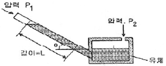
- P1 -P2 = ρgL
- P1 -P2 = -ρgL
- P1 -P2 = ρgLcosθ
- P1 -P2 = -ρgLsinθ
(정답률: 73%)
59. 다음 중 가스의 비중을 이용하는 가스 분석계는?
- 도전율식 CO2 계
- 열전도율식 CO2 계
- 지르코니아식 O2 계
- 밀도식 CO2 계
(정답률: 65%)
60. 다음 중 와류식 유량계가 아닌 것은?
- 칼만식 유량계
- 델타식 유량계
- 스와르미터 유량계
- 전자 유량계
(정답률: 73%)
4과목: 열설비취급 및 안전관리
61. 큐폴라(Cupola)에 대한 설명으로 옳은 것은?
- 열효율이 나쁘다.
- 용해시간이 느리다.
- 제강로의 한 형태이다.
- 대량의 쇳물을 얻을 수 있다.
(정답률: 73%)
62. 보일러수에 관계되는 탄산염 경도에 대한 설명으로 틀린것은?
- 물의 경도 중 칼슘, 마그네슘의 중탄산염에 의한 경도이다.
- 탄산염 경도는 물 속의 Ca2+, Mg2+ 량을 나타내는 지수 이다.
- 탄산염 경도는 계속해서 끓이면 침전을 생성하므로 일시경도라고도 한다.
- 탄산염 경도값에서 비탄산염 경도 값을 뺀 값을 경도라고 하며 그 값이 높을 수록 보일러수에 적합하다.
(정답률: 62%)
63. 보일러 급수의 탈기법 중 물리적인 방법에 대한 설명이 아닌 것은?
- 아황산나트륨을 보일러 급수에 첨가하면 탈산소가 이루어진다.
- 진공으로 하면 기체의 분압이 낮게 되고, 물의 용해도가 감소하여 탈기된다.
- 증기로 가열시키면 기체의 용해도는 감소하고 다시 교반, 비등에 의한 탈기가 용이하게 된다.
- 물을 진공의 용기 속에 작은 물방울로 하는 방법과 증기를 물 속에 불어넣어 물을 교반, 비등시키는 방법을 병용한 보일러 급수의 탈기법이 있다.
(정답률: 53%)
64. 내벽은 내화벽돌로 두께 220mm, 열전도율이 1.1kcal/mㆍhㆍ℃, 중간벽은 단열벽돌로 두께 9cm, 열전도율 0.12kcal/mㆍhㆍ℃, 외벽은 붉은 벽돌로 두께 20cm, 열전도율 0.8kcal/mㆍhㆍ℃로 되어 있는 노벽이 있다. 내벽 표면의 온도가 1,000℃ 일 때 외벽의 표면 온도는 약 몇 ℃ 인가? (단, 외벽 주위온도는 20℃, 외벽 표면의 열전달율은 7kcal/m2ㆍhㆍ℃ 로 한다.)
- 104℃
- 124℃
- 141℃
- 267℃
(정답률: 42%)
65. 보일러 부속장치에 대한 설명으로 틀린 것은?
- 공기예열기란 연소배가스의 폐열로 공급 공기를 가열시키는 장치이다.
- 절탄기란 연료공급을 적당히 분배하여 완전 연소를 위한 장치이다.
- 과열기란 포화증기를 가열시키는 장치이다.
- 재열기란 원동기(증기터빈)에서 팽창한 증기를 재가열 시키는 장치이다.
(정답률: 76%)
66. 다음 중 급수 중의 불순물이 직접 보일러 과열의 원인이 되는 물질은?
- 탄산가스
- 수산화나트륨
- 히드라진
- 유지
(정답률: 73%)
67. 염기성 제강로의 용강이나 광재가 접촉되는 부분에 사용하는 내화물로 가장 적합한 것은?
- 규석질 내화물
- 마그네시아질 내화물
- 고 알루미나질 내화물
- 샤모트질 내화물
(정답률: 54%)
68. 두께 10mm, 인장강도 40kgf/mm2의 연강판으로 8kgf/cm2의 내압을 받는 원동을 만들려고 한다. 이 때 안전율을 4로 한다면 원통의 내경은 몇 mm 로 하여야 하는가?
- 1500
- 2000
- 2500
- 3000
(정답률: 49%)
69. 다음 중 대차(Kiln Car)를 쓸 수 있는 가마는?
- 등요(Up hil kiln)
- 선가마(Shaft Kiln)
- 회전요(Rotary Kiln)
- 셔틀가마(Shuttle Kiln)
(정답률: 76%)
70. 내경 600mm, 압력 8kgf/cm2, 두께 10mm의 얇은 두께의 원통 실린더에 가스가 들어 있다면 원주응력은 약 몇 kgf/mm2 인가?
- 2.4
- 3.2
- 4.8
- 8.8
(정답률: 30%)
71. 금속 공업로의 에너지 절감대책으로 가장 거리가 먼 것은?
- 처리 재료 보유열을 유효하게 이용한다.
- 연소용 공기의 어열을 곧 바로 방열시킨다.
- 배열을 유효하게 이용하고 방사열양의 저감대책을 마련한다.
- 공연비의 개선 및 노 설비의 유기적 결합에 의한 배열의 효율적인 이용을 기한다.
(정답률: 77%)
72. 허용인장응력 10kgf/mm2, 두께 12mm의 강판을 160mm V 흠 맞대기 용접이음을 할 경우 그 효율이 80%라면 용접두께 t 는 얼마로 하여야 하는가? (단, 용접부의 허용응력 σ는 8kgf/mm2 이다.)
- 6mm
- 8mm
- 10mm
- 12mm
(정답률: 54%)
73. 터널가마의 레일과 바퀴부분이 연소가스에 의해서 부식되지 않도록 하는 부분은?
- 샌드시일(sand seal)
- 에어커튼(air curtain)
- 내화갑
- 칸막이
(정답률: 78%)
74. 방열유체의 전열유니트수(NTUh)가 3.2이고 온도차가 96℃인 열교환기의 전열효율을 1로 할 때 LMTD는 몇 ℃ 인가?
- 0.03℃
- 3.2℃
- 30℃
- 307.2℃
(정답률: 45%)
75. 축열식 반사로를 사용하여 선철을 용해, 정련하는 방법으로 시멘스마틴법(siemens-martins process)이라고도 하는 것은?
- 불림로
- 용선로
- 평로
- 전로
(정답률: 67%)
76. 보일러수 중 알칼리 용액의 농도가 높을 때 응력이 큰 금속 표면에 미세한 균열이 일어나는 것을 무엇이라고 하는가?
- 피팅(pitting)
- 가성취화
- 그루빙(grooving)
- 포밍(foaming)
(정답률: 74%)
77. 증기보일러에는 원칙적으로 2개 이상의 안전밸브를 설치하여야 한다. 1개만 설치해도 되는 전열면적의 기준은?
- 10m2 이하
- 302 이하
- 502 이하
- 1002 이하
(정답률: 75%)
78. 배관 도면상에 그림과 같은 표시는 어떤 종류의 밸브를 의미하는가?
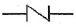
- 앵글밸브(Angle valve)
- 체크밸브(Check valve)
- 게이트밸브(Gate valve)
- 자동밸브(Automatic valve)
(정답률: 78%)
79. 온도의 급격한 변화, 불균일한 가열냉각 등에 의해 로재(내화물)에 열응력이 생겨 균열이 생기거나 표면이 갈라지는 현상을 의미하는 것은?
- 스폴링(spalling)
- 슬래킹(Slaking)
- 버스팅(bursting)
- 하중연화현상
(정답률: 56%)
80. 다음 중 터널요(tunnel kiln)의 장점이 아닌 것은?
- 다품종 소량생산에 적합하다.
- 열효율이 높아 연료가 절약된다.
- 노 내의 분위기나 온도 조절이 쉽다.
- 소성이 균일하여 제품의 품질이 좋다.
(정답률: 69%)